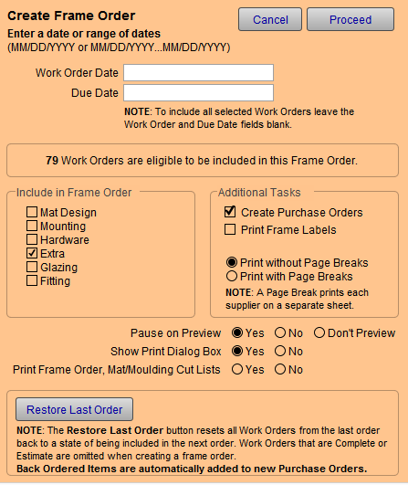

Frame Order Window
Frame Order Screen Explained

Work Order Date Field
-
Sets the date, or range of dates, of the Work Orders to be used in generating the Frame Order (based on the Work Order's Date field).
For example, if you require a Frame Order only for the Work Orders entered today, add today's date.
Do not use in combination with the Due Date Field. Choose one or the other.
-
The date format is: MM/DD/YYYY
-
To enter a range of dates use: MM/DD/YYY...MM/DD/YYYY
Due Date Field
-
Sets the date, or range of dates, of the Work Orders to be used to generate the Frame Order (based on the Work Order's Due Date field.)
Do not use in combination with the above Work Order Date Field. Choose one or the other.
-
The date format is: MM/DD/YYYY
-
To enter a range of dates use: MM/DD/YYY...MM/DD/YYYY
Work Orders Eligible to be Included
-
FrameReady displays the number of Work Orders which have been Selected for Frame Order.
-
You can perform this search yourself: Click Find Work Order and put a checkmark in the Selected for Frame Order checkbox.
Include in Frame Order Checkboxes
-
Options include: Mat Design, Mounting, Hardware, Extra, Glazing, and Fitting.
-
If you wish to include Fabrics, tick the Glazing checkbox.
Create Purchase Orders Checkbox
-
If checked, FrameReady displays the Create Purchase Orders for the Following Vendors screen immediately after printing the last Frame Order.
Print Frame Labels Checkbox
-
If checked, FrameReady generates printable frame labels.
Page Break Radio Button
-
To print each supplier on a separate sheet, choose Print with Page Breaks.
Pause on Preview Radio Buttons
-
Check Yes to display a preview of the document and requires you to click the Continue button in order to present the Print Dialog box. This pause will allow you to also save the document as a PDF by clicking on "Save As PDF..." before it prints.
-
Check No to display a preview of the document, however, it will not pause but will either advance to the Print Dialog box or move directly to printing. This provides a faster option while still allowing you to verify the document before printing.
-
Check Don't Preview and FrameReady will not display a preview of the document. Instead, it will display a blank white area (if you have set the Print Dialog box to display on the screen), or it will simply cause the screen to flash briefly as it sends the document to the printer.
Show Print Dialog Box Radio Buttons
-
Show Print dialog box before printing: Yes, displays the Print dialog box before printing. Use to print more than one copy, change printers, or select special features of your printer or cancel the print job.
-
No, causes the document to be sent directly to the printer without any further prompts. A faster option.
Print Frame Order, Mat/Moulding Cut Lists Radio Buttons
-
Check Yes to also print the Matboard and Moulding Cut Lists.
-
Check No to only print the Frame Order.
Restore Last Order Button
-
Finds all Work Orders that were in the previous Frame Order and resets them so they can be included again in the next Frame Order.
-
Work Orders that are Complete or Estimate are omitted.
-
Back Ordered items will be automatically entered on new Purchase Orders.
-
After using the Restore Last Order feature, you have the option to view a list of the Work Orders that have been reset. To make a Frame Order, click the Create a Frame Order button again and then click the Proceed button.
Tip: The Restore Last Order button is great for those 'oops times, for example, when you didn't have the printer turned on or when you didn't really intend to click the Proceed button and want to start over.
Restore Last Order finds all the Work Orders that were included in the last Purchase Order and toggles their order field so they can be included in the next order (which can include new POs).
For flexibility, the Restore Last Order function allows for duplicate Purchase Orders; it is your responsibility to manage the orders in the system.
© 2023 Adatasol, Inc.